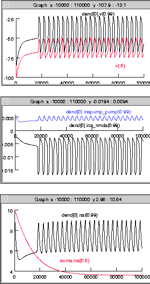

This is the README for the model associated with the paper:
Canavier CC. (1999). Sodium dynamics underlying burst firing and
putative mechanisms for the regulation of the firing pattern in
midbrain dopamine neurons: a computational approach. J Comput
Neurosci. 6:49-69
These model files were created by Dr Canavier.
This example (after reaching steady oscillation) produces trajectories
corresponding to Figure 5 A2. and Figure 6.
The out.gif file shows the time plots generated by the example:

Usage:
Simply auto-launch from ModelDB or compile the mod files under
MSWIN:
-----
Use mknrndll (change directory to the one expanded from the archive
and click "make nrnmech.dll"). Then run by double clicking the
mosinit.hoc file in a windows explorer.
MAC OS X
--------
Drag and drop the expanded folder from this archive onto the mknrndll
icon. Drag and drop the mosinit.hoc file onto the nrngui icon.
Linux/Unix
----------
Change directory to the expanded folder and type these two lines:
nrnivmodl
nrngui mosinit.hoc
Once the simulation is started
------------------------------
Press the init & run button to generate the above figure.
Changelog
---------
2022-12: delay.mod & inmda.mod: drop INDEPENDENT block for v
Required for upcoming NEURON 9.0.0